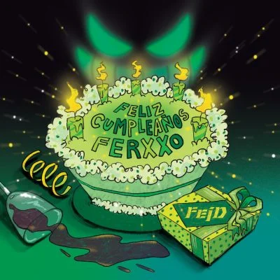
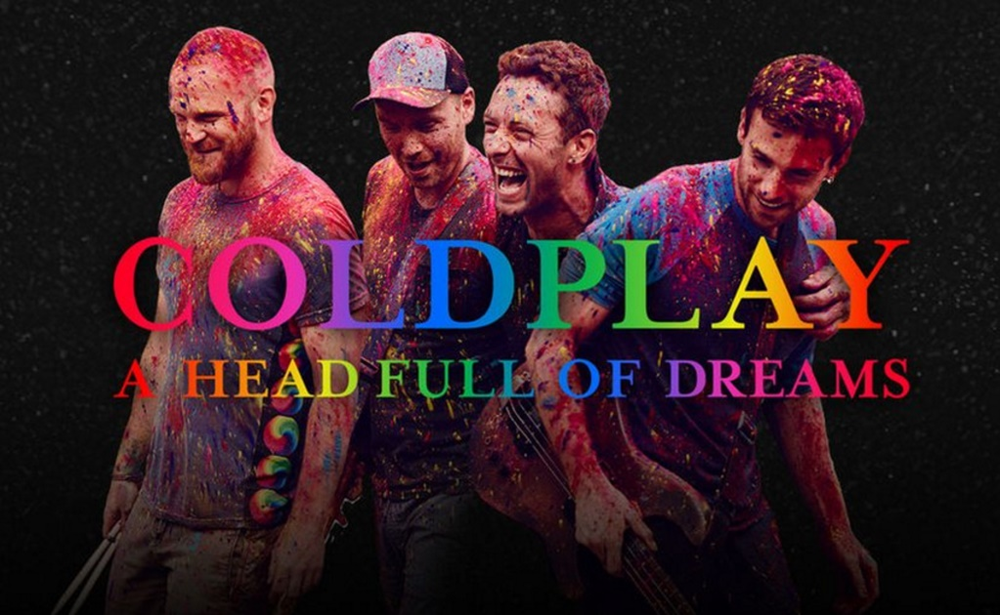
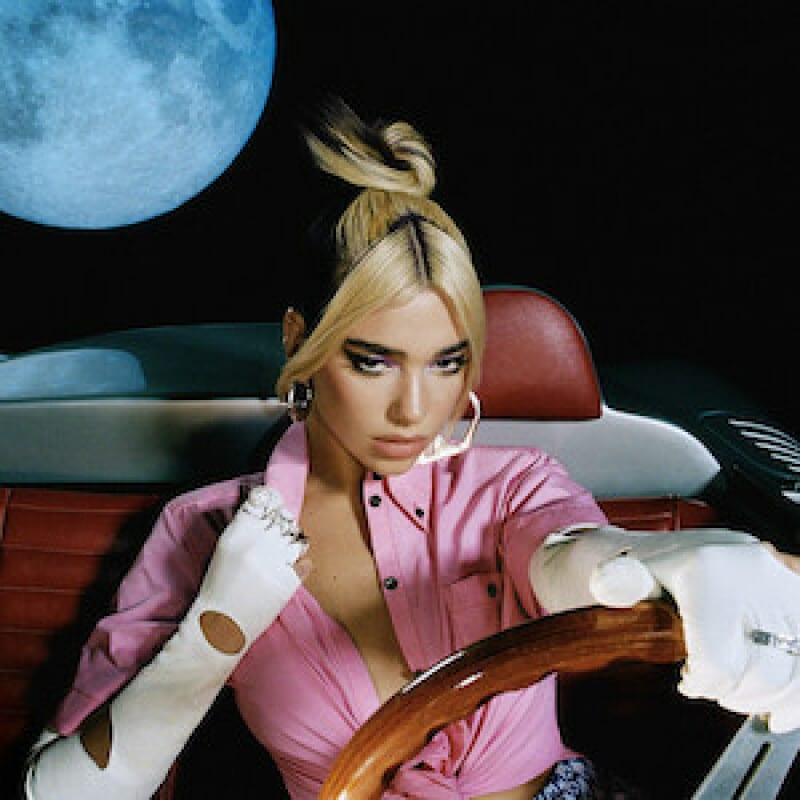
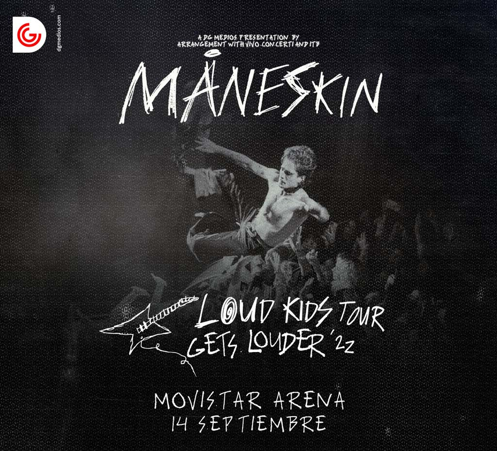

FEID
Artista revelación
Feid, el artista Colombiano revelación del año, está próximo a estrenar su disco "Feliz Cumpleaños Ferxxo", el lanzamiento
se adelanto debido a que su álbum fue pirateado recientemente.

Coldplay
Proximos Eventos
A pocos días del concierto, la banda liderada por Chris Martin, trae una nueva modalidad para acercar a sus fans a la música,
hablamos de "Infinity Tickets", Se trata de un “sorteo” de entradas limitadas para el público general, que en el caso de adquirirlas,
no se conocerá la ubicación. Sino que el mismo día del evento, serán enviadas por correo, y podrán descubrir cuál ubicación les fue asignada.

Dua Lipa
Future Nostalgia
Luego de meses de espera, llega Dua Lipa con el Future Nostalgia tour, miles de fans quedaron sin entradas para el show, por lo
que se espera que la artista Inglesa sea esperada por una multitudinaria cantidad de fans, tanto en el aeropuerto como en
el hotel.

Maneskin
Loud kids tour Gets louder'zz
Llegó a Chile el 14 de Septiembre con un show imperdible, el grupo que volvió a poner a Italia en el mapa, agotó entradas
en tiempo record y sus fans quedaron facinados con la performance.